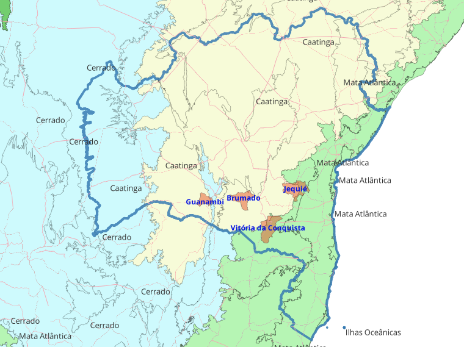

Diagnóstico integrado das dimensões agrícola, pecuária, aquícola e extrativista de 84 municípios, com aplicação do Diamante de Porter, da Inteligência Territorial Estratégica (ITE) da Embrapa e proposta institucional para Unidade Mista de Pesquisa e Inovação.
A Região Sudoeste da Bahia é uma das mais diversificadas e estrategicamente posicionadas do Estado, abrigando 84 municípios analisados nesta Nota Técnica que somam, segundo os dados consolidados do IBGE, mais de 2,7 milhões de cabeças de bovinos, 4,7 milhões de aves, 211 mil ovinos, 168 mil caprinos e uma produção agrícola que ultrapassa 255 mil hectares colhidos em mais de 60 lavouras distintas. A área dedicada ao café — sobretudo arábica — chega a 55.196 hectares, com produção superior a 59 mil toneladas, configurando o Sudoeste como o segundo maior polo cafeeiro da Bahia, atrás apenas da Chapada Diamantina.
O cacau, com 26.736 hectares colhidos, encontra na transição entre o Recôncavo e o Sudoeste — em municípios como Apuarema, Jequié, Itagi e Jitaúna — sua principal frente de cultivo, somando 9.553 toneladas e diferenciando-se pela presença de cabrucas tradicionais. A mandioca, lavoura emblemática da agricultura familiar baiana, ocupa 18.868 hectares e produz quase 149 mil toneladas, com destaque absoluto para Vitória da Conquista (21.799 t) e Belo Campo. A bovinocultura é o eixo pecuário central, com produtividade desigual: Itambé (156.846 cabeças), Vitória da Conquista (133.793), Palmas de Monte Alto (114.879) e Riacho de Santana (106.039) lideram um ranking que evidencia a aptidão regional para a produção de carne e leite em sistemas mistos.
A cafeicultura representa uma das vocações produtivas mais consolidadas da Região Sudoeste da Bahia. Com 55.196 hectares de café arábica colhidos e produção superior a 59 mil toneladas, o Sudoeste configura-se como o segundo maior polo cafeeiro da Bahia, atrás apenas da Chapada Diamantina. Os principais municípios produtores são Barra do Choça (16.000 ha), Barra da Estiva (10.102 ha) e Ibicoara (6.200 ha), todos beneficiados por altitudes entre 800 m e 1.000 m que favorecem grãos de maior qualidade sensorial. O rendimento médio regional de 1.077 kg/ha ainda está abaixo do potencial técnico da cultura, sinalizando ampla margem para ganhos via difusão tecnológica, manejo fitossanitário e transição para cafés especiais certificados — frente estratégica prevista no Eixo 3 da UMIPI proposta, em parceria com a Embrapa Café. No campo da apicultura, municípios como Riacho de Santana, Brumado, Mirante e Manoel Vitorino despontam como protagonistas regionais, com a produção de mel da caatinga integrando o Eixo 6 de sociobiodiversidade da UMIPI e com potencial para valorização via selo de procedência regional.
Na aquicultura, ainda incipiente, a região acumula 591 mil quilos de peixes produzidos — com predomínio absoluto de tilápia (326 toneladas) e tambaqui (200 t) — em municípios como Carinhanha (152 t), Jequié (57,4 t), Caraíbas (42,7 t) e Maracás (42,1 t), apontando enorme potencial inexplorado nos açudes e reservatórios sertanejos. O extrativismo, por sua vez, gera receita relevante a partir do umbu (R$ 5,04 milhões), da lenha (R$ 12,87 milhões) e do carvão vegetal (R$ 1,66 milhão) e da apicultura, com Riacho de Santana, Brumado, Mirante e Manoel Vitorino como protagonistas.
A fruticultura tropical desponta como a vocação econômica de maior valor agregado da região, movimentando, segundo o IBGE, mais de R$ 1,17 bilhão em valor de produção apenas nas quatro culturas principais. O maracujá lidera em geração de receita com R$ 492,4 milhões sobre 14.530 hectares colhidos e 209.279 toneladas produzidas, tendo Livramento de Nossa Senhora (43.039 t), Brumado (12.000 t), Ituaçu (29.400 t) e Tanhaçu (21.000 t) como polos consolidados, com rendimentos médios de 14.404 kg/ha — superiores à média nacional. A manga gera R$ 247,9 milhões em 12.156 hectares, com produção de 129.539 toneladas concentrada em Livramento de Nossa Senhora (54.665 t), Dom Basílio (11.822 t) e Ituaçu (10.200 t), todos municípios irrigados do Vale do Rio das Contas. A banana, com 9.536 hectares colhidos e 89.769 toneladas produzidas, gera R$ 193,5 milhões e tem em Barra do Choça (15.642 t), Carinhanha (11.550 t), Malhada (11.250 t) e Jequié (9.200 t) seus principais municípios produtores. O cacau, por fim, ocupa 26.736 hectares com produção de 9.553 toneladas e movimenta R$ 425,5 milhões, sendo Jequié (8.641 t), Jitaúna (5.616 t), Itagi (4.104 t) e Apuarema (2.132 t) o coração da cabruca regional. Este conjunto demonstra que a fruticultura é capaz de gerar, por hectare, valores até 30 vezes superiores aos da pecuária extensiva — justificando a priorização do Eixo 1 da UMIPI proposta.
A mandiocultura consolida-se como a principal lavoura da agricultura familiar do Sudoeste baiano, com 18.868 hectares colhidos, produção de 148.873 toneladas e valor de produção de R$ 115,4 milhões. O rendimento médio regional de 7.890 kg/ha está abaixo do potencial técnico da cultura (que pode ultrapassar 25 t/ha em condições adequadas de manejo, como demonstram Barra do Choça com 25.000 kg/ha e Belo Campo com 8.000 kg/ha em plantios mais tecnificados), revelando enorme janela para ganhos de produtividade via difusão tecnológica. Vitória da Conquista lidera isoladamente com 21.799 toneladas produzidas em 2.326 hectares, seguida por Cândido Sales (12.320 t), Caetité (11.900 t), Belo Campo (20.400 t em apenas 2.550 ha — destaque em produtividade) e Jequié (3.000 t). A presença da Embrapa Mandioca e Fruticultura como Unidade líder da UMIPI proposta é estrategicamente decisiva: a transferência de variedades melhoradas, o controle da podridão-radicular e a estruturação de casas de farinha modernizadas e cooperativadas podem dobrar a renda de milhares de agricultores familiares, transformando uma cultura hoje predominantemente de subsistência em vetor de inclusão produtiva e segurança alimentar regional.
Apesar do robusto desempenho quantitativo, a região enfrenta gargalos estruturais clássicos: baixa agregação de valor, com escassa industrialização de matérias-primas; déficit logístico, particularmente no escoamento para portos baianos; fragmentação fundiária que limita ganhos de escala em pequenas propriedades; e IDHM médio de 0,673 entre as quatro cidades-polo, todas ainda no patamar "médio" segundo o PNUD.
Diante deste quadro, esta Nota Técnica recomenda a implantação de uma Unidade Mista de Pesquisa e Inovação (UMIPI) sediada em três cidades da Região Sudoeste da Bahia (Jequié, Vitória da Conquista e Guanabmbi), sob liderança da Embrapa Mandioca e Fruticultura. Tal arranjo institucional terá foco em sete eixos prioritários: (i) fruticultura tropical adaptada ao semiárido, (ii) Agricultura Familiar, (iii) Cafeicultura sustentável, (iv) proteína animal sustentável, (v) aquicultura familiar em reservatórios, (vi) sociobiodiversidade da caatinga, (vii) inteligência territorial digital. A UMIPI articulará 12 Unidades da Embrapa, 4 universidades regionais, o Sistema S, governos federal, estadual e municipal, ONGs e startups do agronegócio.
A criação da UMIPI Sudoeste da Bahia, sob liderança da Embrapa Mandioca e Fruticultura, é uma intervenção de grande impacto para alavancar o desenvolvimento o potencial agropecuário regional, com expectativa de retorno significativo em produtividade, renda e indicadores sociais ao longo de 5 a 10 anos.
A fruticultura tropical é a dimensão de maior valor agregado por hectare do Sudoeste baiano, movimentando mais de R$ 1,17 bilhão em valor de produção nas quatro culturas principais, segundo o IBGE PAM. O maracujá lidera com R$ 492,4 milhões sobre 14.530 ha colhidos e 209.279 toneladas produzidas — rendimento médio de 14.404 kg/ha, superior à média nacional —, tendo Livramento de Nossa Senhora (43.039 t), Ituaçu (29.400 t) e Tanhaçu (21.000 t) como polos consolidados. A manga ocupa 12.156 ha e gera R$ 247,9 milhões, com produção concentrada em Livramento de Nossa Senhora (54.665 t), Dom Basílio (11.822 t) e Ituaçu (10.200 t). A banana produz 89.769 toneladas em 9.536 ha (R$ 193,5 milhões), com destaque para Barra do Choça (15.642 t), Carinhanha (11.550 t) e Malhada (11.250 t). O cacau em cabruca ocupa 26.736 ha, gera 9.553 toneladas e movimenta R$ 425,5 milhões, com Jequié (8.641 t), Jitaúna (5.616 t) e Itagi (4.104 t) como epicentro da cabruca regional. Por hectare, a fruticultura gera até 30 vezes mais renda que a pecuária extensiva — fundamento central do Eixo 1 da UMIPI proposta.
| Cultura | Área (ha) | Produção (t) | Rendimento (kg/ha) | Valor (R$ mi) | Municípios líderes |
|---|---|---|---|---|---|
| Maracujá | 14.530 | 209.279 | 14.404 | 492,4 | Livramento · Ituaçu · Tanhaçu |
| Manga | 12.156 | 129.539 | 10.657 | 247,9 | Livramento · Dom Basílio · Ituaçu |
| Cacau (amêndoa) | 26.736 | 9.553 | 357 | 425,5 | Jequié · Jitaúna · Itagi · Apuarema |
| Banana (cacho) | 9.536 | 89.769 | 9.413 | 193,5 | Barra do Choça · Carinhanha · Malhada |
O maracujá (14.404 kg/ha) e a manga irrigada (10.657 kg/ha) demonstram que polos de alta produtividade e valor já operam no Sudoeste. A fronteira de expansão está na pós-colheita, no acesso a mercados premium e na formalização de indicações geográficas — frentes prioritárias do Eixo 1 da UMIPI.
A agricultura familiar é a espinha dorsal social e alimentar do Sudoeste baiano, responsável por aproximadamente 70% dos estabelecimentos agropecuários da região, segundo o Censo Agropecuário. Sua principal expressão produtiva é a mandiocultura, com 18.868 ha colhidos, 148.873 toneladas produzidas e valor de produção de R$ 115,4 milhões. O rendimento médio regional de 7.890 kg/ha está muito abaixo do potencial técnico da cultura — que pode ultrapassar 25 t/ha em condições tecnificadas, como demonstram Barra do Choça (25.000 kg/ha) e Belo Campo (8.000 kg/ha). Vitória da Conquista lidera isoladamente com 21.799 t em 2.326 ha, seguida por Belo Campo (20.400 t · 2.550 ha), Cândido Sales (12.320 t) e Caetité (11.900 t). O feijão-grão (52.861 ha · 19.277 t) e o milho (25.971 ha · 20.127 t) completam a tríade alimentar da agricultara familiar, com produção distribuída por praticamente todos os 84 municípios e forte concentração nas áreas de cerrado e transição de Guanambi, Paramirim e Carinhanha. A olericultura de altitude em Ibicoara — batata-inglesa (290.000 t · 50 t/ha) e tomate (166.590 t · 64 t/ha) — representa o estágio mais avançado de tecnificação no segmento familiar, sendo referência de produtividade para o restante da região.
| Cultura | Área (ha) | Produção (t) | Rendimento (kg/ha) | Municípios líderes |
|---|---|---|---|---|
| Feijão (grão) | 52.861 | 19.277 | 365 | Guanambi · Paramirim · Encruzilhada |
| Milho (grão) | 25.971 | 20.127 | 775 | Carinhanha · Iuiu · Riacho de Santana |
| Mandioca | 18.868 | 148.873 | 7.890 | Vit. Conquista · Belo Campo · Caetité |
| Batata-inglesa | 5.800 | 290.000 | 50.000 | Ibicoara (concentração total) |
| Tomate | 2.591 | 166.590 | 64.296 | Ibicoara · Maracás · Aracatu |
| Algodão herbáceo | 8.211 | 17.344 | 2.112 | Malhada · Palmas de Monte Alto · Iuiu |
A batata-inglesa de Ibicoara (50 t/ha) e o tomate de Ibicoara/Maracás (64 t/ha) sinalizam que polos de alta produtividade já existem dentro da região, sustentados por irrigação tecnificada e clima de altitude. Replicar esta capacidade em culturas-chave como mandioca e feijão, via difusão tecnológica coordenada pela UMIPI (Eixo 2), é o caminho mais curto para ampliar a renda de milhares de famílias agricultoras.
A cafeicultura é uma das vocações produtivas mais consolidadas do Sudoeste baiano e a maior cultura em área colhida da região, com 55.196 ha de café arábica e produção superior a 59 mil toneladas — configurando o Sudoeste como o segundo maior polo cafeeiro da Bahia, atrás apenas da Chapada Diamantina. Os principais municípios produtores são Barra do Choça (16.000 ha), Barra da Estiva (10.102 ha) e Ibicoara (6.200 ha), todos beneficiados por altitudes entre 800 m e 1.000 m que favorecem grãos de maior complexidade sensorial e aptidão para o mercado de cafés especiais. O rendimento médio regional de 1.077 kg/ha ainda está significativamente abaixo do potencial técnico da cultura, sinalizando ampla margem para ganhos via difusão tecnológica, manejo fitossanitário integrado e transição gradual para cafés especiais certificados. A apicultura associada às lavouras de café reforça a sustentabilidade dos sistemas produtivos, com municípios como Riacho de Santana, Brumado e Mirante como protagonistas regionais na produção de mel da caatinga.
| Município | Área café (ha) | Destaque |
|---|---|---|
| Barra do Choça | 16.000 | Maior área cafeeira da região · altitude ~800 m |
| Barra da Estiva | 10.102 | Altitudes até 1.000 m · potencial para cafés especiais |
| Ibicoara | 6.200 | Polo de olericultura e café · referência em qualidade sensorial |
| Planalto | 2.178 | Expansão recente da fronteira cafeeira |
| Vitória da Conquista | 5.491 | Diversificação produtiva · café + mandioca |
| TOTAL REGIONAL | 55.196 | Produção: 59.464 t · Rendimento médio: 1.077 kg/ha |
O rendimento médio de 1.077 kg/ha e a venda predominante em coco indicam que a cadeia ainda opera longe do seu teto de valor. A transição para cafés especiais certificados, via parceria UMIPI–Embrapa Café (Eixo 3), pode multiplicar o preço por saca e posicionar o Sudoeste como origem reconhecida no mercado nacional e de exportação — seguindo o caminho já trilhado pela Chapada Diamantina.
O rebanho bovino regional é dominante e está distribuído de forma desigual mas com forte concentração em municípios de pastagens consolidadas. O total de 2.734.734 cabeças sobre uma área de influência de aproximadamente 65 mil km² resulta em densidade pecuária expressiva. Itambé (156.846), Vitória da Conquista (133.793), Palmas de Monte Alto (114.879), Riacho de Santana (106.039) e Carinhanha (94.804) lideram. A avicultura, em ascensão, conta com 4,76 milhões de aves, com destaque absoluto para Vitória da Conquista (2,25 milhões). A caprino-ovinocultura soma 168 mil caprinos e 212 mil ovinos.
A aquicultura ainda é uma fronteira aberta para a região. Os dados do IBGE PPM mostram produção total de 591 mil kg de peixes em apenas 28 dos 84 municípios — sinalizando que mais de 60% das localidades não exploram comercialmente o potencial dos seus reservatórios. A tilápia (326 t) e o tambaqui (200 t) dominam o mix produtivo. Carinhanha (152,6 t), Anagé (83,4 t), Jequié (57,4 t), Caraíbas (42,7 t), Maracás (42,1 t) e Contendas do Sincorá (40 t) são os polos atuais. A presença de represas grandes (Barragem de Pedras em Jequié, Barragem de Anagé, reservatórios do Médio São Francisco em Carinhanha) cria oportunidade para produção em tanques-rede de escala familiar.
O extrativismo vegetal regional gera receita anual de R$ 25,5 milhões, concentrada em três produtos: lenha (R$ 12,87 milhões), umbu (R$ 5,04 milhões) e carvão vegetal (R$ 1,66 milhão). Riacho de Santana, Feira da Mata e Encruzilhada lideram em volume bruto, mas o destaque qualitativo cabe ao umbu de Mirante (418 t), Brumado (336 t) e Manoel Vitorino (346 t) — fruta-símbolo da caatinga com forte apelo de mercado para sucos e doces gourmet. A apicultura (mel) de caatinga, com Riacho de Santana, Brumado, Mirante e Manoel Vitorino como protagonistas, complementa a pauta extrativista com mel de alto valor, enquanto o licuri e o pequi ampliam o portfólio de produtos da sociobiodiversidade passíveis de certificação e valorização via Eixo 6 da UMIPI.
A inteligência territorial digital é a dimensão transversal e habilitadora de todas as demais. A região carece de plataformas integradas de dados agropecuários, geotecnologias de monitoramento de lavouras e sistemas de apoio à decisão para gestores públicos e produtores rurais. A articulação entre Embrapa Territorial, Embrapa Agricultura Digital e Senai Cimatec no âmbito da UMIPI permitirá construir dashboards regionais com indicadores de produtividade, desmatamento, uso da água e preços; implementar agricultura de precisão adaptada à pequena propriedade; e desenvolver plataformas de IoT e IA aplicadas ao monitoramento de rebanhos, pragas e condições climáticas nos 84 municípios da área de influência. Esta dimensão transforma dados dispersos em inteligência acionável para políticas públicas e decisões privadas de investimento.
A região já produz em volume expressivo, mas converte pouco desse potencial em valor agregado. A bovinocultura opera em sistemas extensivos com carcaças vendidas sem tipificação; o café arábica — 59 mil toneladas em 55 mil hectares — é em grande parte comercializado em coco, sem beneficiamento que capture o prêmio de qualidade de grãos cultivados acima de 800 m de altitude; o cacau de 26.736 ha ainda sai como amêndoa seca, sem a transformação que multiplicaria seu valor no mercado de chocolate fino; o umbu, que gera R$ 5 milhões em receita extrativista, chega ao comprador sem processamento. Cada uma dessas cadeias corresponde a um dos Eixos Temáticos da UMIPI proposta: a fruticultura tropical (Eixo 1), a agricultura familiar de base alimentar (Eixo 2), a cafeicultura de altitude (Eixo 3), a proteína animal sustentável (Eixo 4), a aquicultura em reservatórios (Eixo 5) e a sociobiodiversidade da caatinga (Eixo 6) — todos apoiados pelo Eixo 7 de inteligência territorial digital. A UMIPI deve atuar como catalisador da transformação industrial de proximidade: agroindústrias modulares instaladas nos municípios produtores, denominações de origem protegidas (DOP) para o café de Barra do Choça e o cacau de cabruca de Jequié, e selos de procedência regional para o mel da caatinga e o umbu do semiárido.
A aplicação combinada do Diamante de Porter (condições de fatores, condições de demanda, indústrias correlatas e estrutura competitiva) com as cinco dimensões da Inteligência Territorial Estratégica (ITE) da Embrapa (quadro natural, agrário, agrícola, infraestrutura e socioeconômico) permite enxergar a região como um sistema produtivo articulado, com fluxos, gargalos e externalidades identificáveis.
A região reúne recursos naturais favoráveis: solos de aptidão moderada a alta, altitudes de 200m (Jequié) a 1.000m (Barra da Estiva/Ibicoara) permitindo cultivos diversos, e mão de obra rural disponível. Há, contudo, déficit em fatores avançados: P&D, mecanização, irrigação tecnificada e capital humano qualificado em agronegócio.
A demanda interna baiana é robusta, com Salvador, Feira de Santana e Recôncavo absorvendo fruticultura e olerícolas. Mercados externos (Norte de MG, ES, mercado nacional) consolidados para café e manga. Falta sofisticação na demanda — pouca exigência por certificações e produtos premium —, o que freia a inovação.
Clusters incipientes: mineração em Brumado (magnesita), distrito industrial de VDC (metalurgia, plásticos, alimentos), agroindústrias em Guanambi e Jequié. Faltam elos críticos: máquinas agrícolas, processamento de frutas em escala, frigoríficos certificados SIF e indústria de embalagens. Logística dependente de modal rodoviário pelas rodovias principais da região (BR-116, BR 030, BR 415 e BR 330)
Predomina a agricultura familiar fragmentada (>70% dos estabelecimentos), com baixo associativismo. Existe uma natural rivalidade entre as cidades por atração de investimentos e instituiçoes relevantes como a Embrapa. Iniciativas de associações e cooperativas apontam para adensamento competitivo, ainda em escala modesta.
| Dimensão ITE | Diagnóstico Regional | Indicador-chave |
|---|---|---|
| Quadro Natural | Mosaico de Caatinga (60%), Mata Atlântica (20%) e Cerrado (20%). Bacias do Rio das Contas, Rio Pardo e afluentes do São Francisco. Altitudes 200–1.200m. Pluviosidade 500–1.200mm. | 3 biomas · 2 bacias |
| Quadro Agrário | Predomínio de pequenas propriedades (até 50ha) na agricultura familiar, bolsões de média propriedade em VDC, Barra do Choça e Encruzilhada (café), grandes em Iuiu, Malhada e Carinhanha. | ~70% agric. familiar |
| Quadro Agrícola | Cadeias estruturadas: café arábica, cacau, mandioca, fruticultura irrigada. Cadeias emergentes: aquicultura, uva, olerícolas. | +60 lavouras |
| Infraestrutura | Espinhas dorsais: BR-116, BR-030, BR 330 e BR 415. Ferrovia FCA por Brumado. Porto de Ilhéus. Aeroportos em VDC e Jequié. Déficit em silos e frigoríficos. | 4 BRs · 1 ferrovia |
| Socioeconômico | População 4 cidades-polo: ~690 mil hab. IDHM médio 0,673. PIB per capita médio R$ 27 mil. Escolarização 6-14 anos ~98%. Mortalidade infantil 16‰. | IDHM 0,673 médio |
A combinação Porter + ITE revela região com fatores básicos abundantes mas fatores avançados escassos. A intervenção estratégica deve priorizar: (i) inteligência territorial digital, (ii) pesquisa aplicada para fruticultura tropical e aquicultura, (iii) governança fundiária e ambiental e (iv) qualificação de mão de obra rural. A UMIPI é o instrumento institucional adequado para concentrar estes esforços.
A Embrapa define a Unidade Mista de Pesquisa e Inovação (UMIPI) como "modelo de cooperação entre instituições que permite a união de competências e o compartilhamento de infraestrutura, recursos humanos e financeiros". Já existem UMIPIs operando no Espírito Santo, Sudoeste do Paraná, Cinturão Citrícola, Cacau (CEPEC), Baixada Cuiabana, Oeste Paranaense e Uruguai. Propõe-se a criação da UMIPI Sudoeste da Bahia, com proposta de localização em Vitória da Conquista, Jequié e Guanambi.
Sob liderança da Embrapa Mandioca e Fruticultura (Cruz das Almas-BA), a UMIPI articulará 12 outras Unidades Descentralizadas:
| Unidade Embrapa | Sede | Aderência ao Sudoeste BA |
|---|---|---|
| Embrapa Mandioca e Fruticultura (líder) | Cruz das Almas-BA | Mandioca, banana, maracujá, manga, abacaxi, umbu, cabruca |
| Embrapa Semiárido | Petrolina-PE | Caatinga, irrigação, fruticultura semiárida, caprino-ovinocultura |
| Embrapa Café | Brasília-DF | Café arábica em Barra do Choça, Barra da Estiva, Ibicoara |
| Embrapa Pesca e Aquicultura | Palmas-TO | Tilápia, tambaqui, sistemas em tanques-rede |
| Embrapa Caprinos e Ovinos | Sobral-CE | Manejo, melhoramento e sanidade caprino-ovina |
| Embrapa Gado de Corte | Campo Grande-MS | Bovinocultura de baixa emissão e pastagens tropicais |
| Embrapa Gado de Leite | Juiz de Fora-MG | Sistemas leiteiros em pequenas propriedades |
| Embrapa Solos / UEP Recife | Rio de Janeiro / Recife | Caracterização pedológica e manejo sustentável |
| Embrapa Agricultura Digital | Campinas-SP | ITE, plataformas digitais, IA aplicada ao agronegócio |
| Embrapa Territorial | Campinas-SP | Inteligência territorial estratégica, base SOMABRASIL |
| Embrapa Agroindústria Tropical | Fortaleza-CE | Agroindústria, aproveitamento de resíduos |
| Embrapa Algodão | Campina Grande-PB | Algodão herbáceo em Malhada, Palmas, Iuiu |
| Embrapa Milho e Sorgo | Sete Lagoas-MG | Sorgo no semiárido, milho de sequeiro |
| Embrapa Arroz e Feijão | Santo Antônio de Goiás-GO | Feijão na Agricultura familiar em toda a região |
| Embrapa Suínos e Aves | Concórdia-SC | Manejo, melhoramento e sanidade Suínos e Aves |
| Embrapa Maranhão | Sao Luís-MA | MSisteminha Embrapa |
Em conformidade com a Seção 11 da Norma que regulamenta as UMIPIs no âmbito da Embrapa (aprovada pela Deliberação nº 11, de 1º de junho de 2021), a governança da UMIPI Sudoeste da Bahia será estruturada em dois colegiados formais — Comitê Gestor e Comitê Técnico — articulados pela Unidade líder, sendo regida por Regimento Interno próprio a ser elaborado em até 120 dias após a assinatura do Acordo de Parceria.
Responsável pela gestão estratégica da UMIPI. Composto por um membro titular e um suplente de cada instituição integrante, ocupantes de cargos em comissão, diretivos e/ou executivos, sem remuneração adicional pelo exercício das atribuições. Compete-lhe: elaborar, coordenar e monitorar o planejamento e a programação dos projetos em consonância com o PEU e o SEG; identificar temas relevantes e oportunidades de captação de recursos junto a agências de fomento; decidir sobre gestão de recursos financeiros e destinação de bens adquiridos; e acompanhar as equipes de trabalho.
Responsável pela execução e monitoramento dos projetos. Composto por pelo menos um empregado de cada instituição parceira que desempenhará suas atividades diretamente na UMIPI. Compete-lhe: elaborar Notas Técnicas sobre soluções tecnológicas em atendimento às demandas; encaminhar consultas ao Comitê Gestor; auxiliar e monitorar a execução dos projetos aprovados; e elaborar relatórios de acompanhamento, encaminhando-os ao Comitê Gestor.
A Embrapa Mandioca e Fruticultura, como Unidade Descentralizada líder, é responsável por: indicar os empregados da Embrapa que integrarão o Comitê Técnico (ato decisório da Chefia-Geral) e o Comitê Gestor (designados por ato publicado no BCA); promover a articulação entre o Comitê Gestor da UMIPI e os Comitês Gestores de Portfólios de PD&I; viabilizar a integração das ações da UMIPI com demais ações corporativas; gerir as pessoas vinculadas à base física; e enviar à DEPD relatórios gerenciais periódicos.
Em até 120 dias após a assinatura do Acordo de Parceria, será elaborado o Regimento Interno da UMIPI, descrevendo organização, funcionamento, atribuições dos colegiados e responsabilidades dos envolvidos, observando as normas corporativas de governança. A Diretoria de Pesquisa e Desenvolvimento (DEPD) é responsável pela gestão corporativa das UMIPIs, pelo acompanhamento dos resultados de PD&I e pela disponibilização de indicadores de monitoramento à Diretoria-Executiva.
Estrutura de governança em conformidade com a Norma 037.008.006.001 — Unidades Mistas de Pesquisa e Inovação, aprovada pela Deliberação nº 11, de 1º de junho de 2021, publicada no BCA nº 27, de 07.06.2021. A indicação ou substituição de empregados da Embrapa nos comitês deve ser formalmente designada por ato publicado no Boletim de Comunicações Administrativas (BCA), conforme item 11.8 da Norma.
Montar matriz que combine recursos Federal, Estadual, Emendas Parlamentares, Empresariado, Finep, BNB e Fapesb.
Atrair pesquisadores qualificados para a região exige plano de carreira, bolsas e infraestrutura habitacional adequada.
Manter alinhamento entre Embrapa, governo estadual, produtores rurais, 84 prefeituras na área de influência e bancada parlamentar.
Superar o gap clássico entre pesquisa e adoção tecnológica via parceria com Empresas, Senar, Sebrae e Startups.
A escolha de três cidades (Vitória da Conquista, Jequié e Guanambi) como sedes da UMIPI — operando nas instalações da UESB, UFSB e IF Baiano é estratégica por reunir três vantagens: (i) posição logística, (ii) presença consolidada das instituições de ensino, e (iii) tradição na agropecuária. A liderança pela Embrapa Mandioca e Fruticultura com as Unidades Parceiras complementa esse arranjo com expertise na Agropecuária.
| Categoria | Descrição | Mitigação proposta |
|---|---|---|
| Risco Político | Descontinuidade administrativa estadual e municipal | Contrato-programa multianual com cláusula de continuidade |
| Risco Financeiro | Volatilidade de orçamento Embrapa e governo BA | Diversificação: emendas, Finep, Fapesb, BNB, Banco Mundial |
| Risco Operacional | Infraestrutura física insuficiente nas instituições que irão receber a UMIPI | Plano CapEx plurianual (R$ 8–12 mi / 5 anos) |
| Risco Reputacional | Resultados aquém das expectativas em 2-3 anos | Definição rigorosa de KPIs e comunicação transparente |
| Oportunidade Estratégica | UMIPI como hub de inovação para o semiárido baiano | Posicionamento como referência nacional em aquicultura familiar |
| Desafio Cultural | Adoção tecnológica por agricultores familiares | Metodologia participativa com Senar e Bahiater |
| Localização da UMIPI | Centralização da UMIPI em uma única cidade | Compromete a expansão e o impacto além da limitação de parcerias |
A instabilidade na gestão da Bahia Pesca em Jequié (Sede original proposta). A formalização da UMIPI deve incluir convênio de longo prazo com a instituições parceiras.
O sucesso de uma UMIPI depende fundamentalmente da densidade e diversidade de suas parcerias. Para a UMIPI Sudoeste da Bahia, mapeiam-se as instituições parceiras em seis categorias, totalizando mais de 40 organizações em diferentes níveis de governança:
| Eixo UMIPI | Parceiros principais | Produto esperado |
|---|---|---|
| Fruticultura tropical | Embrapa Mandioca/Fruticultura · UESB · Senar · Cooperativas | Variedades adaptadas, manejo integrado, certificação |
| Agricultura Familiar | Embrapa Mandioca/Fruticultura · Embrapa Milho e Sorgo · Embrapa Arroz e Feijão · SDR · Senar · Cooperativas | Variedades adaptadas, manejo integrado, certificação |
| Cafeicultura | Embrapa Café · UESB | Variedades adaptadas, manejo integrado, certificação |
| Proteína Animal Sustentável | Embrapa Gado de Corte · Embrapa Gado de Leite · Embrapa Suínos e Aves · Embrapa Caprinos | Sistemas silvipastoris, ILPF, manejo caprino-ovino |
| Aquicultura familiar | Embrapa Pesca · Bahia Pesca · UESB · MPA · MDA | Tilápia em tanques-rede, peixes nativos, capacitação |
| Sociobiodiversidade | Embrapa Semiárido · Embrapa Agroindústria Tropical · MDA · SDR · UFSB · ASA Brasil · Cooperativas · IF Baiano | Beneficiamento de umbu, licuri, pequi, mel · selos |
| Inteligência Territorial Digital (Transversal) | Embrapa Territorial · Embrapa Agricultura Digital · Senai Cimatec | Dashboards regionais, IA aplicada, Geotecnologias, IoT, Agricultura de Precisão, plataformas |
As quatro cidades-polo do Sudoeste — Jequié, Vitória da Conquista, Brumado e Guanambi — concentram aproximadamente 733 mil habitantes (estimativa 2025) e desempenham funções complementares no sistema urbano-rural da região:
3º município mais populoso da Bahia, capital regional do Sudoeste. Concentra UESB, UFBA, distrito industrial, comércio atacadista e serviços de saúde. 397 mil habitantes em 2025.
Polo logístico no Vale do Rio das Contas. Tradição em distribuição de combustíveis, presença da UESB, UFSB, IFBA e da Bahia Pesca. 169 mil habitantes sobre 2.969 km². Vocação para aquicultura, fruticultura e logística.
Polo comercial do médio sertão baiano, com vocação terciária e equilíbrio fiscal. Produção destacada em algodão, uva, banana e batata-doce irrigada. 93 mil habitantes em 2025.
Polo industrial-mineral baseado em magnesita da Serra das Éguas. Menor das quatro cidades (74 mil hab.) mas com PIB per capita elevado e indústria como 46% do PIB.
O mapa a seguir representa a distribuição espacial das quatro cidades-polo sobre o território baiano, com sobreposição dos biomas (Caatinga, Cerrado e Mata Atlântica), evidenciando a posição estratégica de três cidades da região como sede proposta da UMIPI no entroncamento entre a Mata Atlântica do leste baiano e a Caatinga do interior:

Figura 1 — Localização das quatro cidades-polo do Sudoeste da Bahia (Jequié, Vitória da Conquista, Brumado e Guanambi) e distribuição dos biomas Caatinga, Cerrado e Mata Atlântica no território baiano. Mostra também a localização da UMIPI Cacau em Ilhéus-BA e da Embrapa Mandioca e Fruticultura em Cruz das Almas-BA. O Rio São Francisco delimita a fronteira oeste do estado.
Os dados consolidados das planilhas em anexo permitem identificar, para cada uma das quatro cidades-polo, as posições de destaque em produção agrícola, pecuária, aquícola e extrativista. Esses destaques fundamentam a priorização de pesquisas pela UMIPI:
| Município | Destaque Produtivo | Volume | Posição |
|---|---|---|---|
| Itambé | Bovinos | 156.846 cabeças | 1º regional |
| Palmas de Monte Alto | Bovinos | 114.879 cabeças | 3º regional |
| Barra do Choça | Café arábica (área) | 16.000 ha | 1º regional |
| Ibicoara | Batata-inglesa | 290.000 t | Monopolista |
| Ibicoara | Tomate | 76.000 t | 1º regional |
| Livramento de Nossa Senhora | Manga · Maracujá | 54.665 t · 43.039 t | 1º regional |
| Malhada | Algodão herbáceo | 8.381 t | 1º regional |
| Carinhanha | Aquicultura · Tambaqui | 118,7 t | 1º aquícola |
| Maracás | Melancia | 27.696 t | 1º regional |
| Tanhaçu | Maracujá · Manga · Umbu | 21.000 t · 6.000 t | Top regional |
| Riacho de Santana | Bovinos · Galináceos | 106.039 · 103.250 | Top regional |
| Lafaiete Coutinho | Galináceos | 135.247 | Avic. intensiva |
| Nº | Tendência | Implicação para a UMIPI |
|---|---|---|
| T1 | Intensificação da fruticultura irrigada no perímetro Brumado-Livramento-Dom Basílio | Eixo 1 · variedades, manejo de pragas, certificação |
| T2 | Expansão da aquicultura em reservatórios e barragens | Eixo 3 · pesquisa em tilápia, tambaqui e nativos |
| T3 | Consolidação do café arábica em zonas de altitude | Parceria com Embrapa Café · denominação de origem |
| T4 | Pressão climática crescente sobre a bovinocultura extensiva | Sistemas silvipastoris, ILPF, manejo adaptativo |
| T5 | Valorização de produtos da sociobiodiversidade | Eixo 4 · processamento, beneficiamento, marketing |
| T6 | Digitalização crescente do agronegócio · AgTechs locais | Eixo 5 · parceria com Senai Cimatec e startups |
| T7 | Envelhecimento da população rural e êxodo dos jovens | Programas de sucessão familiar com Senar e UESB |
Convênio multilateral entre as instituições parcipantes. Sede em quatro cidades com cláusula de continuidade.
Recursos federais e estaduais para a infraestrutura da UMIPI.
Foco em manga, maracujá, banana, umbu e licuri, com variedades adaptadas e exportação assistida via MAPA e ApexBrasil.
Parceria com Embrapa Territorial e Agricultura Digital · dashboard público com dados produtivos atualizados em tempo real.
Capacitação de 1.000 famílias em 5 anos, tanques-rede em Pedras, Anagé e Estreito · meta 1.500 t em 2030.
Recuperação de 5.000 ha em Apuarema, Itagi, Jitaúna e Jequié com clones resistentes à vassoura-de-bruxa, integrando CEPEC.
Selo de procedência regional para umbu, licuri, pequi e mel, articulado com ASA Brasil, Sebrae e cooperativas extrativistas.
ILPF em larga escala em Itambé, VDC, Palmas de Monte Alto e Riacho de Santana, reduzindo emissões e elevando produtividade.
Em 2035, o Sudoeste da Bahia deverá ser reconhecido como uma referência em agropecuária, com IDHM regional médio superior a 0,720, exportações agroalimentares e e a UMIPI Sudoeste da Bahia consolidada como um Centro de Excelência em Geração e Aplicação de Tecnologias voltadas ao produtor rural.
Notas metodológicas: as tabelas a seguir reproduzem integralmente os dados das quatro planilhas em anexo (Pecuária, Extrativismo · Quantidade, Aquicultura · Produção, Agrícola · Área colhida), referentes aos 84 municípios das regiões imediatas do Sudoeste da Bahia. Clique em cada tabela para expandir. Valores em "-" indicam dado nulo ou não informado; "..." indica dado sigiloso/omitido pelo IBGE.
| Município | Bovino | Bubalino | Equino | Suíno total | Suíno matrizes | Caprino | Ovino | Galináceos total | Galinhas | Codornas |
|---|---|---|---|---|---|---|---|---|---|---|
| Érico Cardoso | 3.138 | - | 270 | 2.262 | 300 | 10 | 423 | 36.356 | 7.404 | - |
| Aiquara | 15.633 | 109 | 324 | 175 | 25 | 40 | 89 | 7.470 | 2.645 | - |
| Anagé | 38.472 | - | 1.495 | 5.571 | 878 | 5.998 | 6.587 | 52.790 | 17.420 | - |
| Apuarema | 6.475 | 51 | 110 | 260 | 45 | - | 75 | 11.250 | 4.350 | - |
| Aracatu | 44.280 | - | 1.065 | 5.690 | 970 | 5.445 | 5.290 | 36.720 | 14.820 | - |
| Barra da Estiva | 20.238 | 9 | 1.635 | 1.790 | 305 | 4.825 | 2.745 | 40.225 | 17.950 | 225 |
| Barra do Choça | 34.631 | 39 | 1.251 | 1.365 | 160 | 840 | 2.396 | 23.435 | 9.985 | - |
| Belo Campo | 18.272 | - | 765 | 2.420 | 445 | 1.471 | 3.245 | 26.785 | 7.835 | - |
| Boa Nova | 22.930 | 83 | 1.210 | 5.095 | 510 | 1.632 | 1.900 | 30.420 | 8.525 | - |
| Bom Jesus da Serra | 8.608 | - | 645 | 1.410 | 330 | 2.785 | 2.395 | 16.450 | 6.380 | - |
| Botuporã | 23.461 | - | 665 | 3.539 | 668 | 606 | 1.111 | 35.094 | 10.033 | - |
| Brumado | 70.447 | - | 3.070 | 7.520 | 1.510 | 6.330 | 9.360 | 73.550 | 25.080 | - |
| Caatiba | 42.933 | 2 | 1.580 | 465 | 85 | 125 | 620 | 14.250 | 3.150 | - |
| Caculé | 23.117 | - | 895 | 5.620 | 860 | 480 | 665 | 50.885 | 21.055 | - |
| Caetanos | 13.875 | - | 895 | 4.615 | 645 | 18.350 | 11.425 | 11.650 | 5.250 | - |
| Caetité | 36.064 | - | 1.545 | 11.177 | 1.224 | 474 | 1.782 | 67.882 | 17.320 | - |
| Candiba | 30.705 | - | 1.525 | 6.553 | 1.264 | 1.632 | 2.573 | 35.680 | 11.060 | - |
| Cândido Sales | 16.544 | - | 925 | 1.975 | 295 | 965 | 865 | 20.475 | 8.925 | - |
| Caraíbas | 17.879 | - | 1.125 | 4.694 | 981 | 6.825 | 6.585 | 29.272 | 9.645 | - |
| Carinhanha | 94.804 | 67 | 3.174 | 8.762 | 1.680 | 1.014 | 2.874 | 46.604 | 27.282 | - |
| Caturama | 21.270 | - | 766 | 3.350 | 460 | 795 | 4.796 | 26.474 | 8.308 | - |
| Condeúba | 23.659 | - | 825 | 5.950 | 1.320 | 925 | 965 | 52.225 | 9.650 | - |
| Contendas do Sincorá | 12.343 | - | 220 | 265 | 47 | 625 | 510 | 2.250 | 890 | - |
| Cordeiros | 11.663 | - | 725 | 1.778 | 324 | 1.250 | 995 | 32.309 | 8.505 | - |
| Cravolândia | 7.327 | - | 47 | 35 | 5 | 15 | 10 | 3.180 | 1.125 | - |
| Dom Basílio | 17.957 | - | 262 | 27 | 5 | 1.634 | 1.984 | 15.145 | 3.744 | - |
| Encruzilhada | 45.388 | 2 | 1.535 | 1.736 | 333 | 1.515 | 2.079 | 24.781 | 6.015 | - |
| Feira da Mata | 52.066 | - | 1.475 | 4.725 | 935 | 815 | 1.110 | 41.350 | 9.500 | - |
| Guajeru | 19.937 | - | 1.065 | 4.345 | 1.365 | 1.025 | 965 | 34.825 | 12.620 | - |
| Guanambi | 73.417 | - | 2.985 | 14.718 | 2.517 | 1.774 | 7.405 | 104.500 | 27.518 | - |
| Ibiassucê | 18.903 | 2 | 687 | 5.274 | 678 | 284 | 60 | 41.614 | 16.007 | - |
| Ibicoara | 8.786 | - | 625 | 520 | 110 | 365 | 665 | 12.150 | 5.245 | - |
| Igaporã | 28.691 | - | 835 | 6.690 | 869 | 198 | 1.374 | 29.033 | 14.173 | - |
| Iguaí | 55.368 | 7 | 2.535 | 1.515 | 270 | 145 | 695 | 14.925 | 4.875 | - |
| Irajuba | 11.113 | 41 | 210 | 25 | 5 | 250 | 910 | 4.795 | 1.425 | - |
| Iramaia | 35.044 | 60 | 1.350 | 1.230 | 170 | 2.890 | 1.750 | 14.150 | 6.000 | - |
| Itagi | 11.156 | 8 | 285 | 225 | 35 | 485 | 235 | 3.165 | 875 | - |
| Itambé | 156.846 | 516 | 5.095 | 5.345 | 535 | 1.685 | 1.765 | 17.730 | 5.880 | - |
| Itaquara | 10.307 | - | 415 | 13 | 8 | - | 105 | 11.606 | 8.431 | - |
| Itiruçu | 12.721 | - | 315 | 75 | 15 | - | 225 | 3.695 | 1.153 | - |
| Ituaçu | 12.476 | 9 | 1.275 | 2.495 | 520 | 4.935 | 2.695 | 20.690 | 6.730 | - |
| Iuiu | 71.793 | 6 | 864 | 4.460 | 811 | 1.897 | 1.782 | 15.839 | 4.519 | - |
| Jacaraci | 25.528 | 6 | 1.473 | 8.795 | 1.691 | 225 | 35 | 47.154 | 18.020 | - |
| Jaguaquara | 37.300 | 26 | 640 | 295 | 55 | 270 | 795 | 15.775 | 4.720 | - |
| Jequié | 55.904 | 3 | 2.685 | 2.610 | 345 | 6.615 | 6.275 | 31.785 | 13.665 | - |
| Jitaúna | 8.158 | 32 | 450 | 115 | 18 | 70 | 245 | 5.750 | 2.765 | - |
| Jussiape | 6.971 | - | 450 | 92 | 53 | 14 | 145 | 5.872 | 2.109 | - |
| Lafaiete Coutinho | 16.205 | - | 655 | 95 | 15 | 175 | 765 | 135.247 | 105.874 | - |
| Lagoa Real | 18.540 | - | 810 | 6.310 | 1.420 | 825 | 260 | 45.080 | 15.350 | - |
| Lajedo do Tabocal | 13.477 | - | 460 | 40 | 8 | 6 | 70 | 5.585 | 1.425 | - |
| Licínio de Almeida | 17.166 | - | 1.109 | 2.003 | 245 | 1.609 | 1.174 | 39.849 | 15.074 | - |
| Livramento de N. Senhora | 37.758 | - | 1.002 | 6.258 | 912 | 3.834 | 5.396 | 50.290 | 18.607 | - |
| Maetinga | 8.863 | 4 | 745 | 3.545 | 535 | 1.795 | 1.215 | 18.150 | 5.475 | - |
| Malhada | 88.345 | - | 1.660 | 2.937 | 598 | 839 | 2.299 | 34.809 | 12.650 | - |
| Malhada de Pedras | 19.867 | - | 1.350 | 4.250 | 895 | 3.845 | 1.825 | 29.240 | 8.060 | - |
| Manoel Vitorino | 52.349 | - | 1.510 | 1.485 | 295 | 17.175 | 23.375 | 20.200 | 7.700 | - |
| Maracás | 61.503 | 14 | 1.220 | 815 | 100 | 2.725 | 3.965 | 21.745 | 9.265 | - |
| Matina | 36.509 | - | 1.085 | 4.174 | 761 | 404 | 1.274 | 37.844 | 15.073 | - |
| Mirante | 21.662 | - | 965 | 2.295 | 575 | 10.350 | 6.250 | 22.300 | 9.650 | - |
| Mortugaba | 14.352 | - | 1.130 | 7.352 | 1.430 | - | 127 | 41.395 | 11.713 | - |
| Nova Canaã | 64.499 | 5 | 2.635 | 2.650 | 365 | 55 | 895 | 32.350 | 8.830 | - |
| Palmas de Monte Alto | 114.879 | - | 1.779 | 4.568 | 606 | 1.907 | 9.206 | 40.937 | 15.234 | - |
| Paramirim | 18.383 | - | 535 | 4.477 | 582 | 710 | 3.004 | 45.681 | 11.530 | - |
| Pindaí | 35.795 | - | 1.360 | 6.534 | 1.005 | 850 | 2.750 | 44.249 | 23.723 | - |
| Piripá | 9.395 | - | 645 | 2.775 | 354 | 659 | 651 | 29.850 | 9.795 | - |
| Planaltino | 23.779 | 22 | 290 | 220 | 40 | 110 | 865 | 13.965 | 5.825 | - |
| Planalto | 39.299 | 112 | 1.285 | 1.565 | 250 | 455 | 2.155 | 18.390 | 5.145 | - |
| Poções | 34.035 | 5 | 2.415 | 1.435 | 420 | 4.210 | 4.662 | 23.580 | 8.730 | 3.695 |
| Presidente Jânio Quadros | 25.897 | - | 1.649 | 6.273 | 688 | 2.175 | 1.757 | 45.085 | 9.650 | - |
| Riacho de Santana | 106.039 | 14 | 1.725 | 9.145 | 2.350 | 1.530 | 3.525 | 103.250 | 41.650 | - |
| Ribeirão do Largo | 72.585 | 247 | 2.851 | 1.625 | 245 | 266 | 695 | 24.873 | 6.140 | - |
| Rio de Contas | 9.141 | - | 91 | 1.673 | 237 | 158 | 168 | 10.612 | 2.922 | - |
| Rio do Antônio | 22.234 | - | 1.060 | 5.470 | 1.650 | 950 | 550 | 45.520 | 16.365 | - |
| Rio do Pires | 11.214 | - | 450 | 2.370 | 473 | 942 | 1.359 | 14.965 | 5.320 | - |
| Santa Inês | 6.494 | - | 160 | 60 | 8 | 320 | 145 | 4.125 | 1.365 | - |
| Sebastião Laranjeiras | 42.486 | - | 1.151 | 4.390 | 716 | 530 | 2.678 | 26.393 | 11.934 | - |
| Tanhaçu | 40.640 | - | 1.510 | 4.245 | 1.255 | 6.370 | 7.750 | 28.535 | 8.070 | - |
| Tanque Novo | 14.061 | - | 1.249 | 4.146 | 765 | 1.032 | 1.813 | 46.148 | 14.306 | - |
| Tremedal | 39.788 | - | 1.545 | 5.435 | 1.115 | 3.926 | 4.134 | 48.635 | 17.165 | - |
| Urandi | 29.104 | 19 | 1.130 | 4.378 | 571 | 1.395 | 3.399 | 60.215 | 10.995 | - |
| Vitória da Conquista | 133.793 | 391 | 5.547 | 29.865 | 2.995 | 5.346 | 8.191 | 2.250.600 | 140.570 | - |
| TOTAL REGIONAL | 2.734.734 | 1.911 | 99.026 | 302.519 | 51.158 | 168.026 | 211.927 | 4.759.702 | 1.051.761 | 3.920 |
| Município | Umbu (t) | Pequi fruto (t) | Mangaba (t) | Outros alim. (t) | Carvão (t) | Lenha (m³) | Madeira tora (m³) | Pequi amêndoa (t) |
|---|---|---|---|---|---|---|---|---|
| Érico Cardoso | 1 | - | - | - | - | 7.087 | - | - |
| Aiquara | - | - | - | - | - | 644 | 139 | - |
| Anagé | 42 | - | - | - | - | 1.528 | - | - |
| Apuarema | - | - | - | - | - | 2.048 | 1.873 | - |
| Aracatu | 216 | - | - | - | - | - | - | - |
| Barra da Estiva | 4 | - | - | - | - | 4.789 | - | 11 |
| Belo Campo | - | - | - | - | - | 2.213 | - | - |
| Boa Nova | 115 | - | - | - | - | - | - | 0 |
| Bom Jesus da Serra | 42 | - | - | 2 | - | - | - | 4 |
| Botuporã | 0 | 0 | 0 | - | 1 | 354 | - | 0 |
| Brumado | 336 | - | - | - | - | - | - | - |
| Caculé | 4 | - | - | - | 8 | 15.050 | - | 1 |
| Caetanos | 82 | - | - | - | - | - | - | 1 |
| Caetité | 14 | 146 | - | - | 1 | 14.195 | - | 1 |
| Candiba | 1 | - | - | - | - | 481 | - | - |
| Cândido Sales | - | - | - | - | - | 2.550 | - | - |
| Caraíbas | - | - | - | - | - | 1.857 | - | - |
| Carinhanha | 1 | 2 | - | - | - | 4.031 | - | - |
| Caturama | 2 | - | - | - | 1 | 1.994 | - | 0 |
| Condeúba | 6 | 17 | - | - | 71 | 2.066 | - | - |
| Contendas do Sincorá | 43 | - | - | - | 1 | - | 8 | - |
| Cordeiros | 23 | 1 | - | - | 1 | - | - | - |
| Cravolândia | - | - | - | - | - | 586 | 1.212 | - |
| Dom Basílio | 210 | - | - | - | 1 | 528 | - | 0 |
| Encruzilhada | - | - | - | - | 361 | 15.900 | - | - |
| Feira da Mata | 2 | - | - | - | 3 | 44.400 | 1.320 | - |
| Guajeru | 3 | - | - | - | - | 122 | - | - |
| Guanambi | 3 | - | - | - | 3 | 1.167 | - | - |
| Ibiassucê | 2 | - | - | - | 6 | 11.083 | - | - |
| Ibicoara | - | - | - | - | - | - | 25 | - |
| Igaporã | 6 | 3 | - | - | - | 2.246 | - | 0 |
| Iguaí | - | - | - | - | - | 3.825 | - | - |
| Irajuba | - | - | - | - | - | 822 | - | - |
| Iramaia | 75 | - | - | - | - | 1.396 | - | 2 |
| Itagi | - | - | - | - | - | 996 | 73 | - |
| Itambé | - | - | - | - | - | 1.066 | - | - |
| Itaquara | - | - | - | - | - | 2.501 | - | - |
| Itiruçu | - | - | - | - | - | 899 | - | - |
| Ituaçu | 190 | - | - | - | - | 599 | - | - |
| Iuiu | 3 | - | - | - | 7 | 10.731 | - | - |
| Jacaraci | 3 | 33 | - | - | 5 | 6.550 | - | 2 |
| Jaguaquara | - | - | - | - | - | 4.321 | 1.790 | - |
| Jequié | 68 | - | - | - | 4 | 9.165 | 123 | - |
| Jitaúna | - | - | - | - | - | 814 | 79 | - |
| Jussiape | 1 | - | - | - | - | 2.799 | - | 0 |
| Lafaiete Coutinho | - | - | - | - | - | 1.713 | - | - |
| Lagoa Real | 4 | - | - | - | - | 1.479 | - | 0 |
| Lajedo do Tabocal | - | - | - | - | - | 3.150 | - | - |
| Licínio de Almeida | 2 | 3 | - | - | 3 | 5.379 | - | - |
| Livramento de N. Senhora | 3 | - | - | - | 7 | 3.022 | - | 1 |
| Maetinga | 7 | - | - | - | - | 2.661 | - | - |
| Malhada | 1 | - | - | - | 8 | 4.774 | 457 | - |
| Malhada de Pedras | 60 | - | - | - | - | - | - | - |
| Manoel Vitorino | 346 | - | - | - | - | 557 | - | 1 |
| Maracás | 129 | - | - | - | - | 4.940 | - | - |
| Matina | 1 | - | - | - | 179 | 1.001 | - | - |
| Mirante | 418 | - | - | - | 0 | 873 | 550 | 1 |
| Mortugaba | 1 | 0 | - | - | 4 | 4.775 | - | - |
| Nova Canaã | - | - | - | - | - | 1.115 | - | - |
| Palmas de Monte Alto | 70 | 20 | 5 | - | 9 | 4.117 | - | - |
| Paramirim | 36 | - | - | - | 1 | 4.289 | - | 0 |
| Pindaí | 0 | - | - | - | 3 | 2.622 | - | - |
| Piripá | 2 | - | - | - | - | 2.852 | - | - |
| Planaltino | - | - | - | - | - | 6.188 | - | - |
| Planalto | 3 | - | - | - | - | - | - | 0 |
| Poções | 20 | - | - | - | - | - | - | 3 |
| Presidente Jânio Quadros | 3 | - | - | - | - | 4.083 | - | - |
| Riacho de Santana | 5 | - | - | - | 937 | 61.851 | 21.130 | - |
| Ribeirão do Largo | - | - | - | - | - | 445 | - | - |
| Rio de Contas | 2 | 10 | - | - | - | 2.030 | - | 3 |
| Rio do Antônio | 7 | - | - | - | 0 | 1.514 | - | 0 |
| Rio do Pires | 2 | 0 | - | - | - | - | - | 0 |
| Santa Inês | - | - | - | - | - | 4.533 | - | - |
| Sebastião Laranjeiras | 1 | 5 | - | - | 2 | 1.469 | 107 | - |
| Tanhaçu | 263 | - | - | - | - | 3.085 | - | - |
| Tanque Novo | 1 | 0 | 0 | - | - | 978 | - | 0 |
| Tremedal | 11 | - | - | - | - | 6.134 | - | - |
| Urandi | 8 | 1 | - | - | 3 | 4.039 | - | 1 |
| Vitória da Conquista | 22 | - | - | - | - | 5.452 | - | - |
| TOTAL REGIONAL | 2.926 | 241 | 5 | 2 | 1.630 | 334.523 | 28.886 | 40 |
| Município | Carpa | Curimatã | Pintado/surubim | Pirarucu | Tambacu | Tambaqui | Tilápia | Traíra | Alevinos (mil) |
|---|---|---|---|---|---|---|---|---|---|
| Anagé | - | - | 35.442 | - | - | 25.650 | 22.295 | - | - |
| Boa Nova | - | - | - | - | - | 3.505 | 10.900 | 1.300 | - |
| Caraíbas | - | - | - | - | - | - | 42.685 | - | - |
| Carinhanha | - | - | - | - | - | 118.665 | 33.975 | - | - |
| Contendas do Sincorá | - | - | - | - | - | - | 40.000 | - | - |
| Cravolândia | 12 | - | 13 | - | - | - | - | - | - |
| Guanambi | - | - | - | - | - | 11.065 | - | - | - |
| Ibicoara | - | - | - | - | - | - | 16.545 | - | - |
| Iguaí | - | - | - | - | - | 918 | 2.425 | - | - |
| Iramaia | - | - | - | - | - | 1.625 | 3.895 | - | - |
| Itagi | - | - | - | 2.815 | - | - | 3.215 | - | - |
| Itiruçu | 90 | - | - | - | - | 115 | 160 | - | - |
| Ituaçu | - | - | - | - | - | - | 2.970 | - | - |
| Jaguaquara | - | - | - | - | - | - | 1.795 | - | - |
| Jequié | - | - | 1.850 | - | - | 13.850 | 43.500 | - | 1.125 |
| Jitaúna | - | - | - | - | - | - | - | - | 2.905 |
| Lafaiete Coutinho | - | - | - | - | - | - | 12.200 | 5.525 | - |
| Malhada | - | - | - | - | - | 11.190 | 5.350 | - | - |
| Maracás | - | - | - | - | 8.250 | 9.460 | 24.395 | - | - |
| Mirante | - | - | - | - | - | - | 10.545 | - | - |
| Nova Canaã | 852 | 1.118 | - | 256 | 915 | 835 | 9.836 | - | - |
| Planalto | - | - | - | - | - | 1.082 | 3.875 | - | - |
| Poções | - | - | - | - | - | 512 | 1.497 | - | - |
| Riacho de Santana | - | 155 | 195 | - | - | 1.085 | 1.050 | - | - |
| Santa Inês | - | - | - | - | - | - | 100 | - | - |
| Tanhaçu | - | - | 5.650 | - | - | - | 30.235 | - | 3.435 |
| Vitória da Conquista | - | - | 1.349 | - | - | - | 2.875 | - | - |
| TOTAL REGIONAL | 954 | 1.273 | 44.499 | 3.071 | 9.165 | 199.557 | 326.318 | 6.825 | 7.465 |
| Município | Total (ha) | Banana | Cacau | Café arábica | Cana | Feijão | Mandioca | Manga | Maracujá | Milho | Tomate |
|---|---|---|---|---|---|---|---|---|---|---|---|
| Érico Cardoso | 1.487 | 16 | - | 5 | 240 | 502 | 47 | 180 | 76 | 337 | - |
| Aiquara | 2.432 | 216 | 2.017 | 2 | 7 | 85 | 46 | - | 1 | 8 | 5 |
| Anagé | 1.566 | 30 | - | - | 33 | 700 | 40 | 60 | 15 | 570 | - |
| Apuarema | 2.492 | 232 | 2.132 | - | 20 | 19 | 58 | - | 12 | - | - |
| Aracatu | 2.414 | - | - | - | - | 1.485 | 40 | - | 14 | 485 | 50 |
| Barra da Estiva | 14.097 | 153 | - | 10.102 | - | 1.000 | 392 | 240 | 1.200 | 99 | 500 |
| Barra do Choça | 19.979 | 1.140 | - | 16.000 | 80 | 1.851 | 150 | - | 38 | 567 | 29 |
| Belo Campo | 3.955 | 60 | 5 | 10 | 5 | 500 | 2.550 | 200 | 40 | 500 | 5 |
| Boa Nova | 1.172 | 83 | 600 | 14 | 53 | 150 | 155 | 3 | 19 | - | 36 |
| Bom Jesus da Serra | 773 | 1 | - | - | 5 | 328 | 31 | - | - | 402 | - |
| Botuporã | 1.766 | 3 | - | - | - | 1.303 | 37 | - | - | 358 | - |
| Brumado | 3.911 | - | - | - | - | 1.746 | 97 | 60 | 1.000 | 267 | 60 |
| Caatiba | 331 | 117 | 141 | 4 | 13 | 10 | 26 | - | - | 4 | - |
| Caculé | 1.630 | 8 | - | 1 | 65 | 600 | 200 | - | 120 | 600 | - |
| Caetanos | 667 | 1 | - | - | - | 250 | 27 | - | 66 | 223 | - |
| Caetité | 2.945 | 20 | - | 10 | 185 | 1.000 | 850 | - | 70 | 800 | - |
| Candiba | 1.912 | 7 | - | - | 2 | 1.000 | 70 | - | - | 70 | 20 |
| Cândido Sales | 2.513 | 11 | - | 45 | 4 | 400 | 1.540 | 20 | 3 | 437 | 5 |
| Caraíbas | 1.552 | 50 | - | - | 1 | 679 | 42 | 420 | - | 296 | - |
| Carinhanha | 4.926 | 1.000 | - | - | 10 | 900 | 400 | 600 | 100 | 1.000 | 25 |
| Caturama | 1.683 | 3 | - | - | 250 | 837 | 27 | 25 | 27 | 514 | - |
| Condeúba | 1.447 | 2 | - | - | 58 | 666 | 135 | - | 9 | 572 | - |
| Contendas do Sincorá | 1.027 | 76 | - | 251 | 170 | 20 | 70 | 155 | 220 | - | 2 |
| Cordeiros | 526 | 1 | - | - | 72 | 234 | 48 | - | 3 | 168 | - |
| Cravolândia | 213 | 20 | 153 | 1 | - | 18 | 4 | - | 6 | - | 4 |
| Dom Basílio | 2.685 | 1 | - | - | - | 327 | 40 | 1.200 | 927 | 100 | - |
| Encruzilhada | 8.742 | 318 | - | 5.562 | 100 | 1.145 | 445 | - | 4 | 1.163 | - |
| Feira da Mata | 936 | 1 | - | - | 20 | 300 | 49 | - | - | 555 | 6 |
| Guajeru | 685 | - | - | - | - | 380 | 155 | - | - | 140 | - |
| Guanambi | 4.007 | 264 | - | - | - | 2.225 | 411 | 125 | 31 | 300 | 60 |
| Ibiassucê | 1.584 | 3 | - | - | 35 | 900 | 250 | 6 | 5 | 375 | - |
| Ibicoara | 18.859 | 103 | - | 6.200 | 200 | 1.300 | 50 | - | 600 | 500 | 800 |
| Igaporã | 1.066 | 17 | - | 10 | 36 | 460 | 75 | 3 | 30 | 370 | 7 |
| Iguaí | 2.750 | 400 | 1.520 | 94 | 70 | 140 | 370 | - | 15 | 138 | 3 |
| Irajuba | 478 | 5 | - | 60 | - | 31 | 200 | 2 | 59 | 16 | - |
| Iramaia | 709 | 15 | - | 180 | 36 | - | 294 | - | 77 | - | 22 |
| Itagi | 4.541 | 250 | 4.104 | - | 6 | 9 | 50 | - | 19 | - | 7 |
| Itambé | 1.282 | 128 | 188 | 231 | 20 | 336 | 171 | - | - | 208 | - |
| Itaquara | 437 | 4 | - | 6 | 3 | 46 | 24 | - | 182 | 30 | 18 |
| Itiruçu | 1.031 | 6 | - | 321 | - | 9 | 130 | - | 408 | 11 | 45 |
| Ituaçu | 9.285 | 200 | - | 4.285 | 150 | 1.150 | 250 | 500 | 1.500 | 30 | 100 |
| Iuiu | 4.505 | 7 | - | - | 55 | 400 | 40 | - | 12 | 500 | 5 |
| Jacaraci | 1.894 | 18 | - | 7 | 45 | 1.000 | 200 | 1 | 5 | 600 | - |
| Jaguaquara | 3.141 | 354 | 1.357 | 93 | 33 | 93 | 312 | - | 600 | 31 | 82 |
| Jequié | 11.826 | 2.000 | 8.641 | - | - | 21 | 218 | 62 | 180 | - | 35 |
| Jitaúna | 6.888 | 606 | 5.616 | - | 6 | 125 | 157 | - | 3 | 115 | 5 |
| Jussiape | 1.090 | 13 | - | 102 | 230 | 86 | 110 | 225 | 252 | 52 | - |
| Lafaiete Coutinho | 895 | 2 | - | 127 | - | 176 | 180 | 2 | 344 | 17 | 9 |
| Lagoa Real | 607 | 5 | - | - | - | 220 | 60 | - | 40 | 225 | - |
| Lajedo do Tabocal | 830 | 1 | - | 202 | - | 11 | 240 | - | 300 | 8 | 25 |
| Licínio de Almeida | 1.466 | 12 | - | 40 | 150 | 480 | 78 | 40 | 80 | 580 | - |
| Livramento de N. Senhora | 11.797 | 39 | - | - | 30 | 1.620 | 95 | 6.500 | 3.062 | 300 | 1 |
| Maetinga | 516 | - | - | - | 1 | 315 | 51 | - | - | 144 | - |
| Malhada | 8.379 | 450 | - | - | 10 | 1.500 | 105 | - | - | 1.200 | - |
| Malhada de Pedras | 1.827 | - | - | - | - | 1.200 | 95 | - | 7 | 250 | - |
| Manoel Vitorino | 459 | 2 | - | - | - | 125 | 60 | 4 | 50 | - | 14 |
| Maracás | 3.142 | 15 | - | 361 | - | 202 | 500 | 20 | 464 | 75 | 400 |
| Matina | 1.162 | 7 | - | - | - | 850 | 100 | 2 | - | 75 | - |
| Mirante | 415 | 20 | - | - | 5 | 60 | 58 | 102 | 120 | - | 20 |
| Mortugaba | 1.881 | 12 | - | 17 | 28 | 900 | 180 | - | - | 720 | - |
| Nova Canaã | 2.032 | 336 | 220 | 728 | 10 | 222 | 317 | - | 12 | 180 | 3 |
| Palmas de Monte Alto | 4.042 | 20 | - | - | 10 | 1.600 | 200 | 10 | - | 50 | - |
| Paramirim | 3.133 | 11 | - | - | 75 | 2.100 | 150 | 100 | 45 | 612 | 1 |
| Pindaí | 3.955 | 4 | - | - | 6 | 1.800 | 60 | - | - | 1.000 | 70 |
| Piripá | 803 | 1 | - | - | 70 | 400 | 69 | - | - | 263 | - |
| Planaltino | 881 | 1 | - | 2 | - | 8 | 495 | - | 238 | 8 | 1 |
| Planalto | 4.246 | 102 | - | 2.178 | 18 | 978 | 388 | - | 8 | 482 | 25 |
| Poções | 1.787 | 126 | - | 765 | 4 | 260 | 175 | - | 78 | 260 | 86 |
| Presidente Jânio Quadros | 1.729 | - | - | - | 5 | 1.000 | 187 | 3 | 3 | 504 | - |
| Riacho de Santana | 3.636 | 6 | - | - | 33 | 2.037 | 213 | - | 3 | 1.051 | - |
| Ribeirão do Largo | 2.622 | 208 | 42 | 1.364 | 65 | 270 | 302 | - | - | 371 | - |
| Rio de Contas | 3.135 | 32 | - | 197 | 350 | 270 | 17 | 900 | 650 | 391 | - |
| Rio do Antônio | 1.406 | 15 | - | - | - | 850 | 100 | - | 6 | 400 | - |
| Rio do Pires | 1.330 | 2 | - | - | 50 | 699 | 40 | 1 | 1 | 515 | - |
| Santa Inês | 131 | 4 | - | 10 | - | 28 | 30 | - | 10 | 35 | - |
| Sebastião Laranjeiras | 1.659 | 45 | - | - | 70 | 600 | 115 | 70 | 10 | 200 | - |
| Tanhaçu | 3.646 | 40 | - | 103 | 100 | 1.000 | 83 | 300 | 1.000 | 100 | - |
| Tanque Novo | 1.908 | 4 | - | - | 3 | 922 | 447 | - | 3 | 505 | - |
| Tremedal | 1.934 | 3 | - | 10 | 20 | 970 | 229 | - | 1 | 693 | - |
| Urandi | 1.655 | 5 | - | 5 | 8 | 1.200 | 40 | 15 | 10 | 291 | - |
| Vitória da Conquista | 10.255 | 43 | - | 5.491 | 65 | 1.222 | 2.326 | - | 37 | 955 | - |
| TOTAL REGIONAL (84 municípios) | 255.138 | 9.536 | 26.736 | 55.196 | 3.504 | 52.861 | 18.868 | 12.156 | 14.530 | 25.971 | 2.591 |